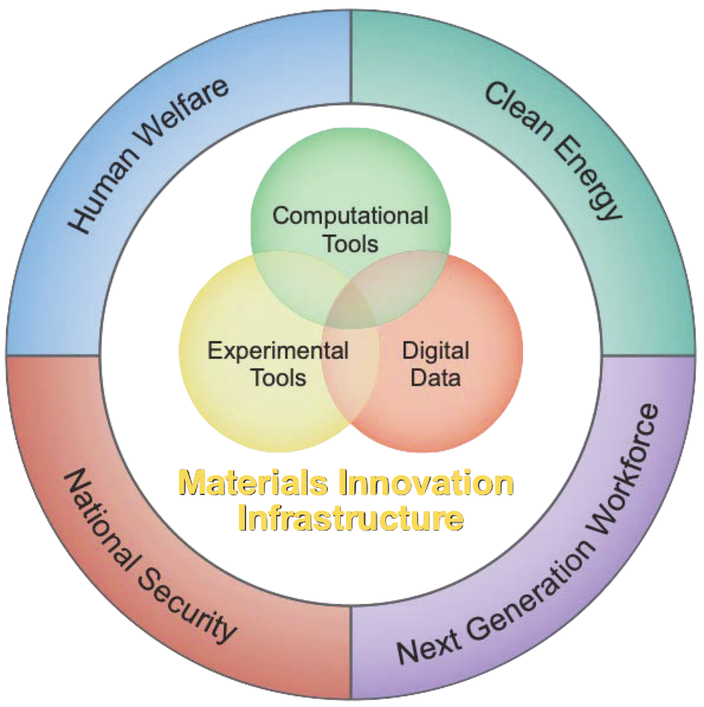

The KIM Initiative
SOURCE:
NSTC Council, MGI Strategic Plan, 2021During
the California Gold Rush, Levi Strauss provided tough pants, later called blue jeans,
to help prospectors seeking gold do their work. A
similar gold rush to discover new advanced materials is underway through
the White House Materials
Genome Initiative (MGI), supercharged by the artificial intelligence
(AI) revolution. Through a collection of companion projects, the
Knowledgebase of Interatomic Models (KIM) Initiative is providing the
“blue jeans” for the community of materials science prospectors who are
seeking to revolutionize technologies across the sciences.
The MGI vision is for “discovering, manufacturing, and deploying advanced
materials twice as fast and at a fraction of the cost compared to
traditional methods.” To do so, scientists must work together, combining
advanced computations, experiments, and data. A key tool in the materials
discovery toolbox are molecular simulations in which the behavior of a
material is modeled by considering the interactions between its
constituent atoms. This allows scientists to do “what if” experiments in a
computer, trying out different material compositions without having to
physically manufacture them, thereby saving time, money, and energy.
The collection of projects under the KIM INITIATIVE provide tools and
resources to researchers in materials science and chemistry who are using
molecular simulations to revolutionize technologies across the sciences.